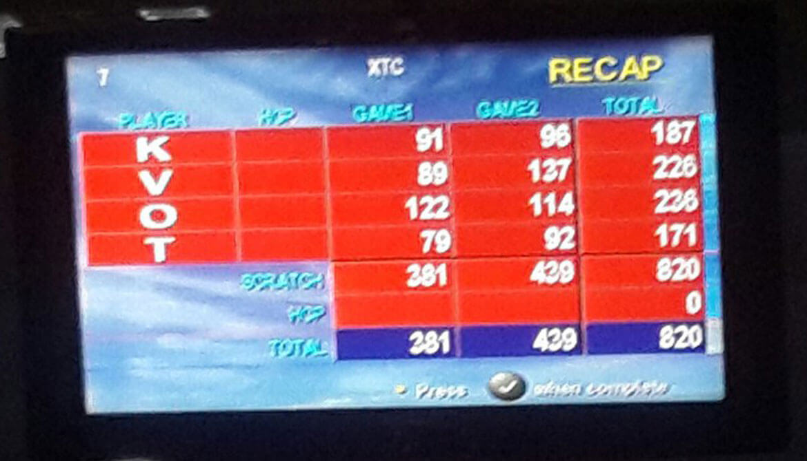

Боулинг - "Битва корпораций" II сезон
17 декабря в субботу в боулинг-клубе «Мисто», прошёл очередной этап второго сезона круглогодичных городских соревнований «Битва корпораций».
Боулинг - это дорогой и относительно новый вид спорта для нашей страны, не доступный обычным теплосетёвцам. Всю скомканную подготовку к соревнованиям сборная осуществляла за свои средства. Тренировались в боулинг-клубе «Мисто» по понедельникам, когда минимальный тариф. Хочу отметить и поблагодарить следующих активных парней и девушек, участвовавших и на равных боровшихся в отборе: Наталию Гармаш, Вячеслава Черняка, Ольгу Иваненко, Антона Золотько, Анатолия Сидь и Артёма Воронова.
По условиям соревнований, нашу команду должна была представлять минимум одна девушка и три парня. Но если нашлись бы девушки, которые сильнее парней в этом виде спорта, команда могла состоять полностью из девушек. У девушек отбор выиграла Татьяна Альшаева, которая только месяц назад попробовала играть в боулинг.
Заключительные средние показатели участников от КП «ХТС» за тренировочную игру:
- Константин Галкин – 127 (посетил две тренировки, с одной из тренировок статистики нет)
- Олег Яритенко – 120 (средний балл трёх тренировок – 117)
- Виктор Лукьянченков – 115 (средний балл четырёх тренировок – 119)
- Татьяна Альшаева – 96 (посетила четыре тренировки, статистика с предыдущих не сохранена).
Потенциала команды было достаточно, чтобы занять в первом раунде девятое место, набрав 916 очков. Вместо этого, мы заняли 11 и не попали в десятку полуфиналистов, набрав 820 очков. Не хватило 33 балла до полуфинала на четверых.
Это фото с результатами:
На соревнования каждая из 18 команд играла 2 партии, состоящие из 10 бросков. Результаты двух заходов суммировались.
В отборочном раунде командами были показаны следующие результаты:
- Атлант - сумма двух партий 1195
- Владар - 1129
- Адидас - 1110
- Альфа-банк - 1007
- Водоканал - 999
- Zotti - 977
- Freshline - 939
- ХКБМ - 923
- NovoAbrasive - 862
- УСК - 852
- ХТС - 820
- Unicredit bank - 808
- Sport Team - 767
- Geonorma - 746
- Галерея мобильной связи - 732
- 9.8G - 619
- Теллур - 616
- Lifecell - 615
Далее было уже без нас, к сожалению.
Средний балл за игру, набранный нашими на соревнованиях:
- Константин Галкин – 93,5
- Олег Яритенко – 118
- Виктор Лукьянченков – 113
- Татьяна Альшаева – 85,5
В полуфинале были показаны следующие результаты:
- Атлант - 547 - сумма одной партии
- Владар - 540
- Альфа-банк - 500
- Адидас - 499
- Zotti - 498
- Водоканал - 452
- NovoAbrasive - 433
- УСК - 431
- Freshline - 410
- ХКБМ - 400
В финале были показаны следующие результаты:
- Владар - 567
- Zotti - 563
- Атлант - 481
- Альфа-банк - 474
- Адидас - 470
- Водоканал - 438
Лучший результат в сборной КП "ХТС" по боулингу, как и в прошлом сезоне, был показан Олегом Яритенко.
Не всем нашим спортсменам на соревнованиях удалось показать результаты, сопоставимые с тренировочными. Может быть это невезение, но факт остаётся фактом.
Ежели есть люди, которые в боулинге сильнее, прошу прийти и показать это на конкретном примере, а не умничать постфактум. Всех с наступающим Новым 2017 годом!
Всё ещё ищем скрытые таланты в боулинге и других видах спорта!